INTRODUCTION - CNG FUEL SYSTEM
- Path
- Descriptions > 10 ENGINE UNIT > 1058 GAS CIRCUIT > INTRODUCTION - CNG FUEL SYSTEM
- Kind
- system description
- Applies to
- engines: 1.6 16v; production: da 06/04; only with equipment: BIPOWER
- Interactive page
- https://sloeber94.github.io/elrnDB-fMltpl/en/#/2892433
Applies to: engines: 1.6 16v; production: da 06/04; only with equipment: BIPOWER
The system for running on two types of fuel comprises the Magneti Marelli IAW 4EF.G1 system for petrol operation and the Metatron METAFUEL 5D0.2B0 system for operating on methane. The two systems are connected via a high speed CAN line.
The Magneti Marelli IAW 4EF.G1 system belongs the category of systems integrated with:
- inductive discharge, digital, electronic ignition
- static advance
- sequential, phased type electronic injection (1-3-4-2).
The Metatron METAFUEL 5D0.2B0 belongs the category of systems integrated with:
- sequential, phased type electronic injection (1-3-4-2).
The METAFUEL system is clear for the basic system for all components and the operation of the basic system is not affected in all operating conditions.
The two control units share some of the system elements. This sharing is transparent to the basic system.
The list of components shared by the two systems, connected in parallel, is as follows:
- intake manifold pressure sensor;
- throttle position sensor;
- engine rpm sensor;
- engine timing sensor;
- Lambda sensor upstream of the catalytic converter.
The list of additional components for the methane system is as follows:
- methane pressure sensor on the high pressure line;
- methane pressure and temperature sensor on the manifold;
- methane injectors with activation relay;
- methane cut out solenoid valves with activation relay.
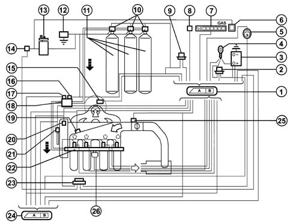
1, Methane engine management control unit
2, Injection system relay
3, Battery
4, Ignition switch
5, Petrol or methane operating mode selector
6, Petrol operation green warning light (Power Mode)
7, Methane level gauge
8, Diagnostic tester connection
9, Methane solenoid valve relay (on canisters and on pressure reduction unit)
10, Solenoid valves on canisters
11, Methane canisters
12, Inertia switch
13, Petrol pump
14, Petrol pump cut out relay
15, Lambda sensor upstream of the catalyzer
16, Solenoid valve on pressure reduction unit
17, Methane pressure sensor
18, Methane pressure reduction unit
19, Air pressure and temperature sensor
20, Engine timing sensor
21, RPM and TDC sensor
22, Methane manifold and injectors
23, Injector relay
24, Petrol engine management control unit
25, Throttle valve position sensor
26, Methane pressure and temperature sensor on the manifold
OPERATION
The system is configured to normally run on methane.
Methane/petrol switching can take place:
- as a result of a manual command by the user through activating the switching button in the passenger compartment;
- automatically when ordered by the methane engine management control unit if the methane in the tank has run out (pressure in the canister less than 14 bar) or in the recovery condition when methane operation is not advisable.
In the first case, methane operation is only restored when the button is deactivated; in the second case, it takes place when the conditions that brought it about no longer exist (on subsequent starting).
The engine is started up on petrol with an automatic shift to methane after a few seconds designed to keep the injectors and the petrol pump working efficiently. There must therefore always be petrol in the tank. For this reason, there are two fuel level gauges. Starting up on methane is only possible in recovery.
The operating mode is signalled by means of the PETROL operation warning light (POWER MODE) located in the instrument panel. Irrespective of the position of the switching button, if this indicator is off it means unequivocable methane operation and if it is on it means petrol operation.
There is a CAN communication line between the two electronic units through which data, commands and other information required for the correct management of the two control units is exchanged.
The functions managed by the METATRON 5DO.2B0 control unit are, basically, as follows:
- Petrol operation
- Methane operation
- Engine Signal Management
- Ignition management
- Injection management
- Idle speed management
- System self-adjustment
- Start-up
- Operation during acceleration and deceleration
- Cut-off operation
- Operation in full load conditions
- Protection beyond revs
- Barometric correction
- Fuel vapour recovery
- Control of combustion gases - Pre-catalyzer Lambda sensor
- EOBD emission control
- Air conditioning compressor connection
- Fuel level signalling
- Switching between two operating modes (petrol and methane)
- Connection with electronic key (Fiat CODE)
- System self-diagnosis
- Petrol pump operation
- Methane cut out solenoid valve operation.
DIAGRAM SHOWING INFORMATION ENTERING/LEAVING THE CONTROL UNIT
The communcation between the petrol engine management control unit and the methane engine management control unit takes place via the CAN line.
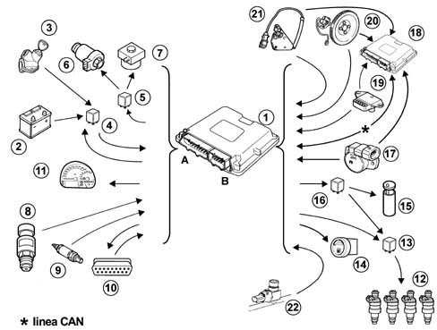
1, Methane engine management control unit
2, Battery
3, Ignition switch
4, Injection system relay
5, Solenoid valve relay on canisters and on pressure reduction unit
6, Canister solenoid valves
7, Methane pressure reduction unit solenoid valve
8, Methane pressure sensor
9, Lambda sensor upstream of the catalyzer
10, Diagnostic tester connection
11, Methane level gauge
12, Methane injectors
13, Methane injector relay
14, Petrol or methane operating mode selector
15, Petrol pump
16, Petrol pump cut out relay
17, Throttle valve position sensor
18, Petrol engine management control unit
19, Air pressure and temperature sensor
20, RPM and TDC sensor
21, Engine timing sensor
22, Methane pressure and temperature sensor on the manifold
PETROL OPERATION
In this operating mode there are no functional variations in relation to the basic system.
The basic electronic unit does not alter its behaviour and the system management strategies are the same as for the basic version.
The specific elements for the methane system do not interfere in any way with the basic system.
METHANE OPERATION
The engine runs on methane except during the starting stage (obviously with the selector positioned at GAS Mode before starting). The petrol pump is not supplied when changing to methane operation.
The METAFUEL electronic unit only manages the phased, sequential type methane injection. All the other engine management functions, including the ignition advance, are left to the basic unit. Injection takes place directly through the operation of the specific methane system injectors. The ignition advance is adjusted by sending the basic electronic unit the advance variation to be added to the one for petrol operation. This communication takes place via the CAN line between the two control units.
The commands for the petrol injectors, the fault diagnosis and the petrol self-learning strategy are also disabled via the CAN. The other basic electronic unit functions are carried out normally and all the input signals remain unchanged. All the commands are implemented as usual (stepper, ignition, etc.).
The METAFUEL electronic unit processes the information coming from the basic system sensors and the additional ones in order to recognize the system operating conditions and produce suitable commands for the methane injectors.
The management strategies use typical curves and control parameters stored in the METAFUEL electronic unit memory. The calibration figures are defined on the basis of performance, consumption, emission and driveability aims.
The specific management strategies for the methane system are basically as follows:
ENGINE SIGNAL MANAGEMENT
The METAFUEL electronic unit recognizes the engine timing and determines the injection timing angle. This recognition takes place by processing the signals coming from the timing sensor and from the rpm and TDC sensor. These two signals make up the engine signals.
The synchronization of the signals and signal wave shapes are the same as those for the basic electronic unit.
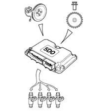
IGNITION MANAGEMENT
The coil charging time and the moment of ignition in relation to TDC are always determined and managed by the basic electronic unit which receives the variation in the advance to be implemented from the METAFUL via the CAN.
The METAFUEL electronic unit memory contains a map of the advance shift values according to the engine speed and load conditions. The calculation of the advance correction involves selecting a basic value and correcting in according to the coolant temperature.
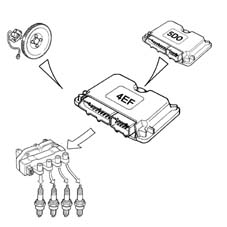
INJECTION MANAGEMENT
The aim of the fuel management is to supply the correct amount of fuel required by each cylinder to satisfy the objectives of performance, consumption and engine emissions. The METAFUEL unit also manages the starting stage.
The injection is the sequential, phased type.
The METAFUEL control unit uses an indirect type engine load measurement system (speed-density). This method is used to calculate the quantity of fuel to inject into each cylinder for each engine cycle.
The methane is supplied by modulating the injector opening time. The injector inlet pressure is regulated by the pressure reduction unit.
The METAFUEL unit injection strategies make it possible to supply the correct amount of methane to the engine in all operating conditions (acceleration, deceleration, altitude, cold weather).
IDLE SPEED MANAGEMENT
The management of the idle speed (stepper management) is carried out by the basic electronic unit; the METAFUEL unit alters the idle speed with a suitable offset transmitted via the CAN in order to prevent the engine from stalling in certain operating conditions (e.g. power assisted steering) due to the control of the fuel only by the METAFUEL unit.
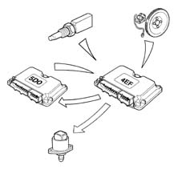
SYSTEM SELF-ADJUSTMENT
The self-adjustment strategies allow the adjustment of the injection to the changes in the system due to production dispersions and ageing of the engine.
STARTING
The engine is always started up on petrol. Starting up on methane is only permitted in recovery.
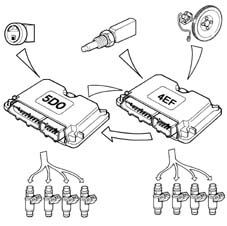
OPERATION IN ACCELERATION AND DECELERATION CONDITIONS
These operating conditions are identified by means of the throttle and manifold pressure signals.
During these two stages the METAFUEL unit adjusts the fuel injection as quickly as possible in order to maximize acceleration torque and ensure optimum driveability during deceleration.
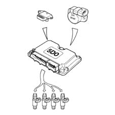
CUT-OFF OPERATION
The fuel cut off strategy is implemented when the throttle is closed at high engine speeds. This strategy is only enabled above a certain coolant temperature level. The METAFUEL electronic unit manages the inlet and outlet from this stage in order to reduce emissions during these engine operating conditions.
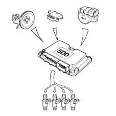
OPERATION IN FULL LOAD CONDITIONS
Full load operating conditions are not managed because when running on gas the engine operates under stoichiometric conditions in all operating conditions.
PROTECTION BEYOND REVS
The METAFUEL electronic unit manages the protection of the engine outside of revs. This protection involves cancelling the injection times when a given speed is exceeded. Normal injection is resumed when the speed returns to below the critical value.
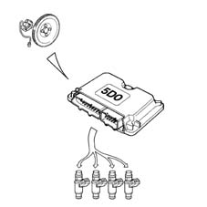
BAROMETRIC CORRECTION
There is a strategy in the METAFUEL control unit that recognizes the altitude and implements a barometric correction of the mixture strength.
FUEL VAPOUR RECOVERY
When running on methane the management of the petrol canister purge is carried out by the METAFUEL unit by sending the command to the basic unit via the CAN line.
As far as the methane fuel supply system is concerned, it is sealed. The fuel is present in a gaseous form in every point of the circuit from the canister to the injectors. The pressure of the methane in the section between the canister and the pressure reduction unit never exceeds the maximum pressurizing pressure in any operating conditions. Methane vapour recovery systems are therefore not needed.
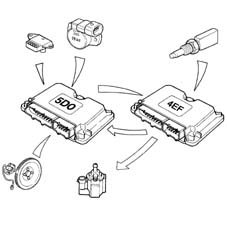
CONTROL OF COMBUSTION GASES - LAMBDA SENSOR
The METAFUEL electronic unit uses the signal for the Lambda sensor upstream of the catalyzer to control the metering of the air/methane mixture in order to ensure maximum catalyzer conversion efficiency.
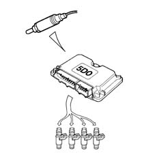
EMISSION CONTROL
The METAFUEL electronic unit uses the signal from the methane perssure and temperature sensor on the manifold to correct the injection times, thereby controlling the exhaust emissions which are within the regulations for EURO3 - EOBD.
AIR CONDITIONING COMPRESSOR CONNECTION
The METAFUEL electronic unit is not connected to the air conditioning system.
The switching on and off of the compressor in certain operating conditions to improve the performance of the engine is managed by the basic electronic unit through the same modes and operating conditions as for the basic system.
FUEL LEVEL SIGNALLING
The METAFUEL electronic unit measures the pressure value inside the tank. The tank filling level is determined on the basis of this information; this information is then sent from the METAFUEL control unit to the special gauge located in the instrument panel.
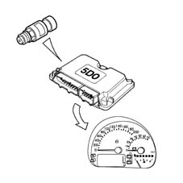
SWITCHING BETWEEN THE TWO OPERATING MODES (PETROL AND GAS)
This function is governed by the METAFUEL electronic unit and a selector button located in the dashboard under the speedometer.
If the selector button (1) is in the released position this means that the user has chosen Gas operation and, if it is pressed, Petrol operation. There is also a "PETROL Mode" operation indicator consisting of a green warning light (POWER MODE) in the instrument panel and a Gas level indicator comprising a series of green LEDs and 1 yellow LED for the reserve (2). The latter indicator is always activated irrespective of the operating mode.
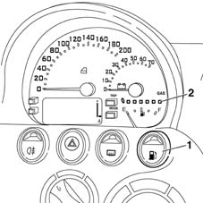
SWITCHING BETWEEN THE TWO OPERATING MODES (PETROL AND GAS)
The lighting up logic for the "PETROL Mode" indicator in the instrument panel is, irrespective of the selector switch position, to signal:
a) Gas operation = lighting deactivated
b) Petrol operation = lighting activated.
The user can switch between the two operating modes at any time.
Petrol --> Gas Switching
The following cases are possible:
1. Manually, by the user with the engine switched off
Selector switch position: released
"PETROL Mode" indicator: deactivated.
During starting the "PETROL Mode" indicator is on (activated), thereby indicating that the engine is supplied with petrol.
When the engine has been started up (as soon as cranking is over) the switch to methane takes place and the "Petrol Mode" warning light lights goes out.
2. Manually, by the user with the engine running.
Selector switch initial position: pressed
"PETROL Mode" indicator initial lighting: activated.
By the user releasing the selector button this starts the Petrol --> Gas switching function which only takes place when the following conditions are satisfied:
a) Gas pressure in upper canister at a certain level (value set at around 14 bar);
b) engine speed below a certain level:
c) no faults detected during the fault diagnosis of the METAFUEL electronic unit.
The switching does not take place unless all three of the conditions are satisfied.
When the switching has taken place, the "PETROL Mode" indicator in the instrument panel goes out.
Gas --> Petrol Switching
The following cases are possible:
1. Automatically (with the engine running).
Selector switch initial position: released
"PETROL Mode" indicator initial lighting: deactivated.
The automatic switching from Methane Gas --> Petrol takes place according to decisions by the METAFUEL unit control strategies and only if the following operating conditions are satisfied:
a) Gas pressure in canister (equivalent to fuel level) below the reserve level (value set at around 14 bar);
b) identification of serious fault in the system (if "slight" faults are detected, the automatic switching does not take place and methane operation continues).
If one of the two conditions has been satisfied, the switching from Gas to Petrol takes place immediately and the "PETROL Mode" indicator in the instrument panel lights up. The position of the selector remains unchanged.
After the switching has taken place, Methane gas operation is completely inhibited until the cause of the automatic switching is eliminated (fuel supply or elimination of the fault).
2. Manually, by the user with the engine running.
Selector switch initial position: released
"PETROL Mode" indicator initial lighting: deactivated.
By pressing the selector button the user starts the switching function from Gas --> Petrol which takes place immediately together with the "PETROL Mode" indicator in the instrument panel coming on.
RECOVERY
If the METAFUEL unit identifies a serious fault (e.g. in the methane injectors) switching to petrol operation is automatic and, at the same time, this is signalled via the instrument panel.
If the METAFUEL unit identifies a less serious fault, this is signalled but methane operation continues.
CONNECTION WITH ELECTRONIC KEY
The METAFUEL control unit is not connected to the electronic key congtrol unit (Fiat CODE).
The electronic key system only remains operational with the basic system; since it is necessary, even during methane operation, exploiting the basic unit functions with the exception of injection management takes place with the operation of the electronic key guaranteed in all conditions. Starting with a key that has not been memorized in the Fiat CODE control unit is not permitted in either operating mode (petrol or methane).
The procedure for personalizing the vehicle or programming the keys is the same and should be carried out in the petrol mode.
SYSTEM SELF-DIAGNOSIS
The METAFUEL electronic unit carries out the fault diagnosis of the input/output, cyclically checking the signals and an internal self-diagnosis programmes the codes in the EEPROM in the case of malfunctions (passive self-diagnosis).
It is also possible to activate the individual actuators, using the diagnostic equipment, checking their efficiency (active self-diagnosis).
The total cancellation of the EEPROM is carried out by means of the diagnostic equipment.
In breakdown conditions the control unit manages the alternative functions to keep the engine running as far as possible to allow the vehicle to return; only in the case of serious problems (e.g. methane injectors) does it automatically switch to petrol operation with the gas level indicator in the instrument panel switching off (recovery).
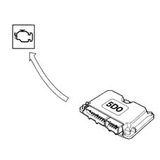
PETROL PUMP OPERATION
The petrol pump is operated by the methane engine management control unit by means of a relay.
The pump is stopped:
- if the engine goes below about 50 rpm;
- after a certain time (about 5 seconds) with the key in the ON position without the engine being started up (timed enablement);
- if there is a petrol/methane switch;
- if the inertia switch has gone off.
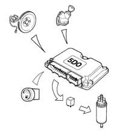
GAS CUT OUT SOLENOID VALVE OPERATION
The GAS cut out solenoid valves are operated by the methane engine management control unit via a relay.
The solenoid valves are closed:
- if the engine goes below about 50 rpm;
- after a certain time (about 5 seconds) with the key in the ON position without the engine being started up (timed enablement);
- if there is a methane/petrol switch;
- if the inertia switch has gone off.
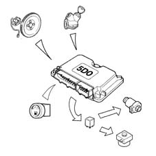
METAFUEL 5D0.2B0 INJECTION CONTROL UNIT
The control unit is fitted under the dashboard on the passenger side and is capable of withstanding high temperatures.
It is a digital type unit with a microprocessor featuring a high calculation capacity and is accurate, reliable, versatile, with low energy consumption and is maintenance-free.
The task of the electronic control unit is to process the signals coming from the various additional sensors belonging to the methane system and from the various sensors shared with the petrol system through applying software algorithms and controlling the operation of the actuators (in particular, the methane cut out solenoid valves, injectors) in order to ensure optimum engine operation and communicating with the IAW 4EF.G1 control unit via the high speed CAN line.
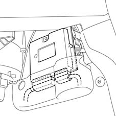
METAFUEL 5D0.2B0 CONTROL UNIT PIN OUT
The diagram below shows the control unit pin out.
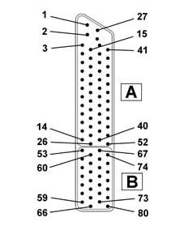
Connector A:
1, Direct supply from the battery
2, Not connected
3, Diagnostic socket (line K)
4, Not connected
5, Not connected
6, Digital earth
7, Not connected
8, Not connected
9, Not connected
10, Not connected
11, Timing sensor (negative)
12, Timing sensor (signal)
13, Not connected
14, Not connected
15, Diagnostic socket (line L)
16, Outside sensor supply
17, Not connected
18, Not connected
19, Not connected
20, Not connected
21, Not connected
22, Digital earth
23, CAN-L line
24, Not connected
25, Not connected
26, Not connected
27, Battery earth direct return
28, Earth
29, Methane temperature signal on manifold
30, Methane pressure sensor signal
31, Methane pressure signal on manifold
32, Throttle position sensor (negative)
33, Absolute pressure sensor (negative)
34, Supply controlled by ignition (+15)
35, Pre-catyalyzer Lambda sensor signal (negative)
36, Not connected
37, Not connected
38, CAN-H line
39, Not connected
40, Not connected
41, Not connected
42, Not connected
43, Throttle position sensor (signal)
44, Absolute pressure sensor (signal)
45, Not connected
46, Pre-catyalyzer Lambda sensor signal (positive)
47, Petrol or methane selector input
48, Not connected
49, Not connected
50, Not connected
51, RPM sensor (positive)
52, RPM sensor (negative)
Connector B:
53, Not connected
54, Methane cut out solenoid valve relay operation
55, Battery earth
56, Cylinder no. 4 injector.
57, Cylinder no. 2 injector.
58, Not connected
59, Methane injector supply return
60, Methane level analogue signal output
61, Battery earth
62, Battery earth
63, Cylinder no. 3 injector.
64, Cylinder no. 1 injector.
65, Not connected
66, Methane injector supply return
67, Not connected
68 - Methane injector relay feed
69, Not connected
70, Not connected
71, Not connected
72, Not connected
73, Not connected
74, Petrol pump deactivating relay feed
75, Not connected
76, Battery earth
77, Not connected
78, Not connected
79, Not connected
80, Methane injector supply return
CONSTRUCTION specifications
The special methane injectors are the sonic type.
The main difference between these injectors and those for petrol lies in the fact that they have a larger nozzle for the methane outlet and operate at a considerably higher pressure (10 ± 1 bar). As a result, the quantity of methane injected depends solely on the injector opening time (injection time) which is established by the methane electronic control unit.
The injectors are fastened by the methane distribution manifold which presses the actual injectors into their seats in the intake manifolds.
They are also secured to the methane distribution manifold by means of safety clips. Two rubber seals (1) and (2) provide the seal on the intake manifold and on the methane distribution manifold.
The methane supply takes place at the top part (3) of the injector (top feed); the connector for the injector operation engages in the housing (4).
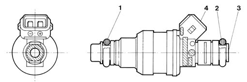
OPERATION
The injector operating logic is the "phased, sequential" type, in other words the four injectors are operated individually depending on the engine cylinder inlet sequence, whilst the supply for each cylinder can already begin during the expansion stroke until the inlet stroke has already started.
CONSTRUCTION SPECIFICATIONS
The methane distribution manifold (1) is fastened at the top of the intake manifold. It receives methane at low pressure from the flexible pipe (2) which acts as a connection with the pressure reduction unit and distributes it to the four injectors (3).
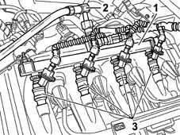
METHANE PRESSURE SENSOR
The pressure sensor (1) is fitted on the pressure reduction unit (2) at the high pressure line intake (3).
CONSTRUCTION SPECIFICATIONS
It is a capacitive type sensor (where the sensitive element consists of two gold-plated ceramic discs) which contains the signal air conditioning circuit.
It receives a supply voltage of 5V.
The measurement of the methane pressure at the high pressure line is designed to:
- indicate the quantity of methane in the canister (fuel level gauge);
- provide information for the control unit for the automatic switching from methane operation to petrol operation if the methane pressure is too low (below 14 bar).
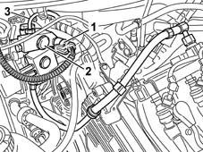
CONSTRUCTION SPECIFICATIONS
Electrical connections
Fuel system: pin 16
Earth: pin 22
Signal: pin 30
Electrical properties
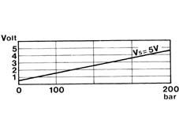
METHANE PRESSURE AND TEMPERATURE SENSOR ON THE MANIFOLD
The pressure and temperature sensor (1) is fitted in the centre of the manifold where the injectors (2) are fitted.
CONSTRUCTION SPECIFICATIONS
It is a dual sensor: one part is the NTC resistive type and detects the temperature of the methane; the second part of the sensor is the capacitive type (the sensitive element comprises two gold ceramic discs) containing the circuit with a 5V supply: this (linear) sensor "reads" the pressure of the methane in the manifold (about 10 bar).
This sensor is designed to carry out the CNG fuel system fault diagnosis and improve the correct combustion calculation chain.
PETROL/METHANE SWITCHING
The system is equipped with a petrol/methane selector button which works as follows:
- button pressed, petrol operation;
- button not pressed, methane operation, with the exception of certain situations (first starting after methane operation, run out of methane, faults which require shift to petrol operation).